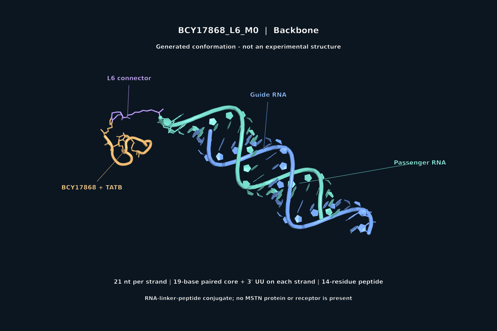
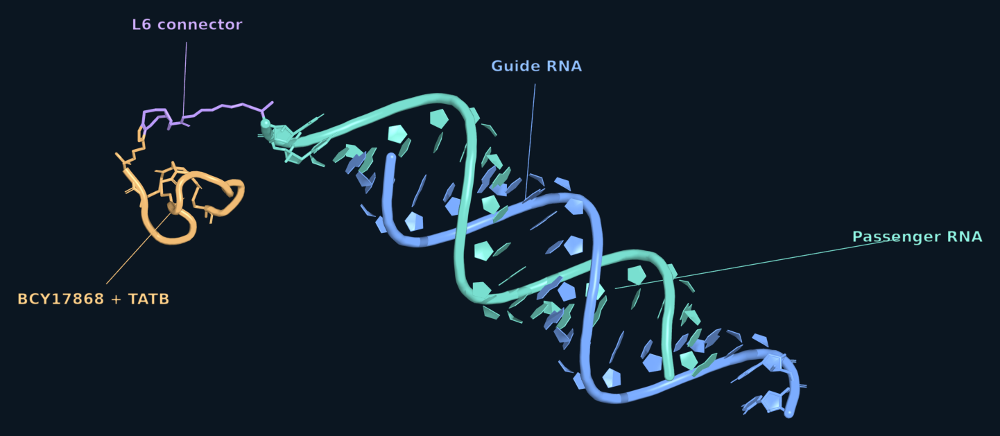
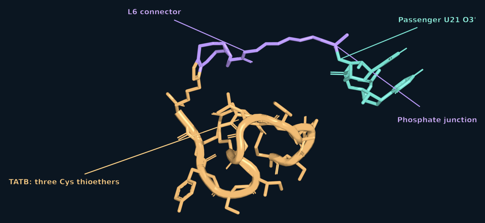
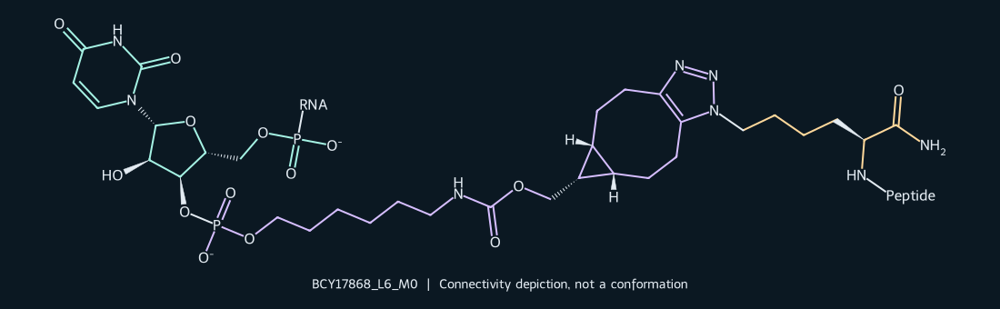

SOOBIN LIM · RESEARCH PROJECT
A computational study of MSTN siRNA
Could reducing myostatin support muscle mass and strength? This study develops a computational starting point for testing that question.
Where the proposed siRNA acts
Research motivation: greater physical capability
siRNA guide + cellular RNA-silencing machinerycleavage of matching MSTN RNA
Less MSTN RNA available to make myostatin.
From the reference sequence to 176 eligible windows
Every overlapping 19-base window is assessed; potential-interaction counts are reported separately.
From sequence rules to reporter evidence
Are the three core-composition rules associated with measured reporter inhibition?
One transparent construction starting point
A later, outcome-aware match-count preference selects one construction starting point.
Specify the molecule before drawing its shape
Twelve proposed chemical graphs define the connections before any shape is generated.
Inspect the architecture, then state its limits
One generated conformation of BCY17868_L6_M0.
Why the receptor-bound comparison stopped
The goal was to compare linker and peptide-handle designs in a receptor-bound pose.
What to test next
From a computational starting point to measurements in an MSTN-expressing model.
STANDALONE MODEL / EXPLORATORY CONFORMATION
Structure explorer

Backbone & peptide loop
RNA cartoon + peptide loop trace. No helix or sheet assignment.

Verified model data is not available in this copy.
No substitute geometry is displayed. The construction report records the model’s status.
Generated conformation — not experimental. Every view uses the same standalone coordinates. This illustration does not repair or replace the failed receptor-bound comparison.Generated conformation — not experimental. The receptor-bound comparison remains unresolved.
How the conformation was built
- 01
Exact identity + saved RNA
BCY17868_L6_M0 graph and the existing RNA template.
- 02
Constrained fragment geometry
RDKit distance geometry with terminal-uridine atoms anchored; internal numerical refinement.
- 03
Attachment placement
Declared rigid rotations position the appendage. All 884 RNA coordinates stay fixed.
- 04
First passing conformation
The finite construction search accepts its first qualified placement.
No docking or molecular dynamics; no energy-ranked best structure. The geometry results below describe this one generated conformation.
CONFORMATION GEOMETRY 0 overlaps above 0.6 Å; 17 above the stricter 0.4 Å threshold. These geometric measurements are not physical validation. Colors mark components; representation details are stated for each view.
Construction report ↗Model provenance & limits
The model is read from the local verified data bundle. Its status, coordinate recipe and validation belong to the standalone construction report.
This display does not estimate a preferred solution conformation, binding energy, stability, potency or delivery. M0 is one exact proposed identity; no experimental product abundance is implied. View controls change only the display.
Biological rationale & background sources
Background comes from the pinned 2016 siRNA study and 2021 myostatin study. The receptor–SMAD route is supported by Rebbapragada et al. (2003); receptor use depends on cellular context, and this is not an exhaustive pathway map. The producer and responder are drawn separately to explain the steps; this does not exclude signalling back to the producing cell. Intracellular action assumes successful delivery; uptake is not depicted or established here.
SEQUENCE DESIGN & CANDIDATE EVIDENCE
Candidate & sequence evidence
One declared preference selects a development starting point from the historical sequence-eligible pool.
Mouse comparatorExact identity at the assigned orthologous mouse site is required.
19 base pairs + two 3′ UU ends
21 nucleotides per strand; antiparallel orientation.
All 2,801 windows face the same five requirements
- 01A C G U
Unambiguous core
A, C, G or U only.
- 026–11 / 19
GC content
30–60% GC (inclusive).
- 034+
No long homopolymer
No runs of ≥4 identical bases.
EXCLUDED EXAMPLE MOTIF - 048+
No long tandem repeat
Perfect 2-base repeats: <8 bases.
EXCLUDED EXAMPLE MOTIF - 0519 / 19
Exact mouse-site match
Assigned orthologous site; no gaps.
Three mutually exclusive outcomes
Eligible
172 CDS windows · 4 in the 3′UTR
Excluded
Failure reasons can overlap.
Incomplete
For these windows, mouse-site assignment was unresolved.
Mutually exclusive classifications—not a sequential funnel. Failure predicates can overlap.
Full-core search
Intended MSTN matches identified separately
Canonical seed search
Annotated 3′UTRs · 220,484 transcripts
| Class | 1 | 2 | 3 | 4 | 5 | 6 | 7 | 8 |
|---|---|---|---|---|---|---|---|---|
| 8mer | ||||||||
| 7mer-m8 | ||||||||
| 7mer-A1 |
8mer first at each anchor; remaining 7mer classes
[455, 474)
ENST00000260950.50-based, half-open transcript coordinates
21 bases per strand. Both records read 5′→3′; this is a sequence view, not an antiparallel duplex alignment.
6,875 combined annotated transcript-site occurrences 2,711 guide + 4,164 passenger · a count preference, not measured specificity.
Two filters, then the lowest combined count
- FULL CORE
0 recorded other-gene hits
19 bases · ungapped · 0–2 substitutions
14remain - CANONICAL SEEDS
0 recorded GDF11 sites
Assessed 3′UTRs · both strands
5remain - ORDER THE FIVE
Lowest combined seed count
Guide + passenger · 8mer / 7mer-m8 / 7mer-A1
1[455, 474) · zero-based, end excluded
2,711 guide + 4,164 passenger = 6,875
Later construction preference; historical eligibility is unchanged. Counts are not measured potency or specificity.
Candidate explorer
All rows remain historically sequence-eligible. “Preference met” applies only to the later selection rule. Sorting changes the display, not the scientific decision.
Candidate data is not loaded.
| Selection status | Sequence & details |
|---|
Candidate / structure specification 5a4237b0db502f3e8f0cb7f383155d0cd14fc0bf
Composition and exact human–mouse conservation define eligibility. Full-core searches allow 0–2 substitutions; canonical 8mer, 7mer-m8 and 7mer-A1 searches cover annotated 3′UTRs. Zero counts describe only those boundaries.
Sequence rules & source records
Eligible cores contain 6–11 G/C bases, no homopolymer of four or more bases, no perfect dinucleotide tract of eight or more bases, and exact human–mouse conservation. Specificity counts did not gate historical sequence eligibility. The terminal-four-base-pair stability calculation is an unmodified-RNA heuristic and never a selection score.
Sequence freeze c88a0d5e0aafb4237147041372332538f699bb24
RETROSPECTIVE REPORTER EVIDENCE
Evidence & decision history
Sequence-composition rules were evaluated on 2,431 corrected published reagent records.
From composition rules to a gene-level contrast
- GC: 30–60%6–11 of 19 bases
- No homopolymer ≥4 bases
- No perfect 2-base repeat ≥8 bases
Means of normalized reporter inhibition
Both contrasts: nominal 95% t intervals.
Primary and sensitivity results
30 genes · equal weight14B sensitivity +0.09195% interval [0.058, 0.125]
12 block means · equal weight
Dots show the reported differences; horizontal lines show nominal 95% confidence intervals.
Retrospective association, not independent validation. Related genes limit independence; rule-development overlap is unresolved.
95% interval [0.055038, 0.095435]
95% interval [0.058055, 0.124773]
Three separate decisions
- REPORTER EVALUATION
Reporter evaluation completed
The result was already known before coverage-panel selection.
- COVERAGE PANEL
Eight-member coverage panel
Saved sequence evidence supported a coverage objective. The reporter result was already known.
- CANDIDATE PREFERENCE
One construction starting point
[455, 474) was selected by a separate declared preference.
Eight members · five merged locations
[328, 347)[332, 351)[336, 355)[340, 359)[418, 437)[849, 868)[1231, 1250)[2235, 2254)Four of eight members form one 31-nt cluster: five merged locations.
Coverage of feature bins does not imply independent sites or potency.
Interpretation, dependence & historical order
Points are the reported differences; horizontal lines are nominal 95% intervals. The analyses use different weighting and estimands; the 0.05 threshold applies to 14A only. Related gene families limit independence. No new efficacy analysis was performed for this view.
Four of the eight panel members fall in a single merged cluster spanning 31 nucleotides. Consecutive windows share 15 of 19 paired-core bases, below the declared 16-base redundancy threshold. Zero redundancy under two declared definitions is objective-specific. Independent information, uniqueness, lexicographic optimality and potency were not established.
Marginal bin coverage does not penalize sequence similarity below the overlap threshold. Windows with shared sequence can occupy different GC, seed or conservation bins and count as diverse under the objective. This is a limitation of the criterion, not an error in the selected result.
Both frozen analyses point in the same direction; the primary interval lay above the prespecified operational threshold of 0.05 reporter units. Related gene families limit the independence interpretation. Whether these rules overlap the dataset’s original rule development remains unresolved. This is a retrospective evaluation, not independent validation.
The corrected publisher table was used after a corrigendum: the original supplementary table had contained model predictions. The coverage panel used saved sequence evidence after the reporter evaluation was complete. Coverage-selected panel membership does not establish eight independent experimental sites or potency.
The eight coverage-panel windows were [328, 347), [332, 351), [336, 355), [340, 359), [418, 437), [849, 868), [1231, 1250) and [2235, 2254). The fixed eight-member objective covered 39/39 active bins and 180/180 coverage weight, with zero redundancy under two declared definitions. That objective-specific result does not imply independent information, uniqueness or potency; lexicographic optimality was not proven.
Evaluation freeze 2cba539a8d44695fd23bac630ae837c7e6799d48
SOURCE-TRACEABLE CHEMICAL IDENTITY
Twelve exact proposed graphs
A specified component-based design defines every connection before coordinates are constructed.
2 peptide handles
3 spacer lengths
2 stereochemical forms
Separate chemical identities
2 × 3 × 2 = 12 proposed identities
Unranked designs · M0 and M1 kept separate| Peptide handle | L4 | L6 | L8 |
|---|---|---|---|
| BCY17868 | M0M1 | M0 shownM1 | M0M1 |
| BCY17869 | M0M1 | M0M1 | M0M1 |
Two covalent components
BCY17868_L6_M0


Proposed identities, not synthesis results. M0 and M1 remain separate; no measured product ratio is inferred. The graphs do not establish synthesis feasibility, formulation or activity.
M0 and M1 stay separate
The two click mappings yield separately registered stereochemical identities. No measured isomer ratio or population weight is assigned.
Source stereo & declared conventions
Peptide residues, terminal amides and three TATB thioethers are explicit. The RNA is an unmodified computational architecture; charge and histidine tautomer are representation conventions.
Specified connectivity
Molecular graphs and HELM records describe the proposed components and connections. The proposed identities do not establish a synthesis route, yield, formulation or activity.
Chemical provenance, uncertainty & freeze
The exact published RNA–linker support was not established. A new passenger-U21 phosphate–alkyl–carbamate–endo-BCN design was specified from documented components. Peptide residues, source stereochemistry, terminal amides and three TATB thioethers were specified explicitly.
The RNA is an unmodified computational architecture. Charge and histidine-tautomer representations are declared conventions, not measured solution populations. These proposed graphs do not establish a synthesis route, yield, formulation or activity.
Chemical specification 165d72d904f93c565752f8bf4c3fa09c7e74e0c0
Original specification SHA256 0fdd79e05904dacec4c9ebf254f03f313d7bbe8b408905030c4a4be79508de50
GEOMETRY / TWO DISTINCT COMPUTATIONAL RECORDS
Conformation geometry & comparison limit
The standalone illustration and the original comparative computation have different methods and outcomes.
- 01
Reference pose
Published TfR1-bound peptide · 9GH7
- 02
Reconstruct the peptide
Retain shared coordinates; rebuild changed side chains
Moving the linker cannot change this fixed pair.
This failure does not establish that the molecule cannot be synthesised or bind.
Source record ↗Overlap counts in the standalone model
The displayed molecule retains 884 RNA atom coordinates and has 185 specified carbon stereocenters.
The stricter result includes 8 pre-existing RNA pairs and 9 new pairs. Geometric measurements are not physical validation or evidence of a preferred solution conformation.
Standalone construction report ↗New overlap in the shared peptide core
Ser–Asp oxygen overlap failed the 0.4, 0.6 and 0.8 Å thresholds for both handles. The atoms are 11 bonds apart; the rebuilt oxygen cannot inherit a reference exemption.
Scope of the geometric result
No overlaps were flagged between the fixed peptide core and external obstacles; the complete mobile conjugate was not assessed.
Comparative result unavailable
The fixed peptide core failed the declared geometric criterion. No structural ranking was produced. Dependent integrated comparison remains unperformed.
Methods, records & unassessed domains
No alternative rotamer, receptor site, radius or threshold was chosen to clear the failed baseline. The standalone conformation is a separate illustration. Further comparison requires a justified new construction method or a demonstrated implementation correction. Dependent integrated comparison remains unperformed.
Variants, expression and tissue exposure, target accessibility, six-mer and noncanonical interactions, therapeutic modification optimization, receptor binding, productive delivery, efficacy and clinical suitability remain unassessed.
DECISION / SCOPE + NEXT WORK
A reviewable research handoff
The dossier supports review of a sequence and exact chemistry. Experimental suitability remains an open question.
Which starting point meets the declared requirements—and what does the evidence support?
A traceable path through sequence screening, retrospective evidence and chemical construction.
One development starting point.
Twelve exact proposed chemical identities.
One generated standalone conformation, with its construction limits retained.
Prepare → measure → interpret
PROPOSED · NOT PERFORMED- 01
Review the reagent
Identity & chemical feasibility
- 02
Qualify the model
Endogenous MSTN & controls
- 03
Plan the comparison
Biological replicates & sampling
MSTN RNA
RT-qPCR
Myostatin protein
Define form & assay selectivity
Viability
Interpret alongside RNA & protein
GDF11
Measure a specific concern
MSTN knockdown cannot establish specificity
An MSTN-only assay cannot validate off-target-match axes. Other-transcript effects require their own measurements; delivery, RNA, protein and viability answer different questions.
Define the intended scope
Separate the construction starting point, final therapeutic chemistry and candidate choice for testing.
Read the decision brief ↗Make the assay discriminating
Confirm measurable endogenous MSTN. Plan chemistry-matched controls, delivery controls, RNA, protein and viability readouts.
Proposed assay handoff ↗Specify further structural work
Further comparison requires a justified new construction method or a demonstrated implementation correction. Preserve the original stop.
Review the geometry gate ↗Scope & sources
Sequence screening, retrospective evaluation, coverage selection and molecular construction answer different questions. Their methods, results and limitations are retained in the linked research records.